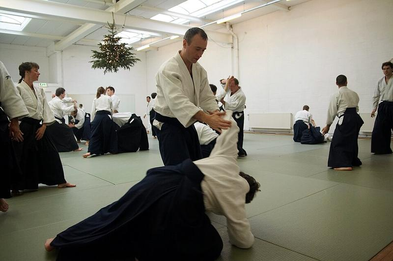

Tai Sabaki
If irimi and tenkan are the alphabet, tai-sabaki is the first word spelled from it. The term means body-turning, and the sources use it for the whole class of movements where you change your facing without losing your base. This article separates the thing that actually moves — the hips — from the thing people watch, and reads the two classic foot paths the turn is built from.

Photo: Dokiai Aikido, CC BY-SA 2.0, via Wikimedia Commons.

What the Word Covers
Roedel gives the cleanest definition on the shelf: enter (irimi), turn (tenkan), and the body movement that results is tai-sabaki. So tai-sabaki is not a third movement competing with the other two. It is the name for what happens when they are combined into a single continuous motion.
That distinction matters practically. A beginner learns irimi as a step and tenkan as a turn, and then treats the combination as a step followed by a turn. It is not. At the moment of transition the weight is already on the foot that will pivot, which is why the combination is fluid where the two pieces practised separately are not.
It Is the Hips, Not the Feet
The word is tai (body) and sabaki (handling, managing). What gets handled is the centre — in practice, the hips. Watch a competent practitioner and the feet look almost idle while the hips travel a considerable distance. Watch a beginner and the feet are busy and the hips barely move.
This is the same inversion taiji states as “the waist is the master.” Both traditions put the command at the centre of the body and treat the legs as the transmission. The instruction to give a student is therefore never “move your feet there” but “send your hips there, and let the feet solve it.”
The Two Shapes: S and V
Descriptions of the path tend to resolve into two shapes.
The S-path. The hips travel in a shallow S: out to one side, across, and back in on the other. This is the shape of a wide entry that has to pass around an obstacle — a shoulder, an extended arm — before arriving. The path costs distance, and it is chosen when the straight line is occupied.
The V-path. The hips travel out and immediately back in, two straight legs meeting at a point. This is the cheap version, chosen when the straight line is open or nearly open. It is what most effective movement actually looks like once the timing is good, because good timing opens the line and the expensive S is no longer needed.
The useful reading is that the S is not a stylistic preference but a fallback. Players and students who always travel the S are paying for insurance they usually do not need.
The Weight Shift Inside the Turn
Shioda’s instruction on weight is the concrete detail underneath all of this: roughly sixty per cent on the front foot and forty on the rear, maintained rather than fixed. That split is what makes the turn possible without a preparatory step. Because one foot is already clearly fuller, the body knows which foot may be lifted and which must stay put.
The corollary is the rule that shows up in every source in some form: the fuller foot is the one that pivots, the emptier one is the one that travels. Trying to turn on the empty foot is the common error, and it produces the two-footed slide that taiji calls double-weighting.
On the Tennis Court
1. Command the hips, not the feet. The inversion is directly transferable. A player who thinks about where the hips must be arrives in better shape than one who thinks about where the feet must go, because the feet then solve a simpler problem.
2. Take the V when the line is open. Most movement to a ball is a V: out and back. Saving the S-shaped detour for genuinely blocked paths is a real saving of distance and time over a match.
3. Keep the split so the turn is available. The sixty-forty idea is why a player should not settle flat-footed and level. A small, maintained bias keeps one foot free to pivot and the other free to step, which is exactly the condition needed for the next ball.
Source Books
Bodo Roedel, Aikido — Những Điều Cơ Bản (Aikido — the basics) — tai-sabaki as the combination of entering and turning: aikido_roedel_basics_vi
Gozo Shioda, Total Aikido — the sixty-forty weight split and the foot that may be lifted: aikido_total_aikido_vi
Cross-checked against Nishio’s Aikido — Võ Đạo Của Sự Chấp Nhận and Takemusu Aikido vol. 1 on turning and centre: aikido_nishio_yurusu_budo_vi · aikido_takemusu_vol1_vi
All quotations translated from the Vietnamese readers of these editions. Diagrams are original work made for the TFL Footwork Research Project.
← Irimi and Tenkan - The Two Steps Aikido Is Built From | TFL Footwork Research Project | Ma-ai and De-ai - Distance and Timing, Both Decided by the Feet →